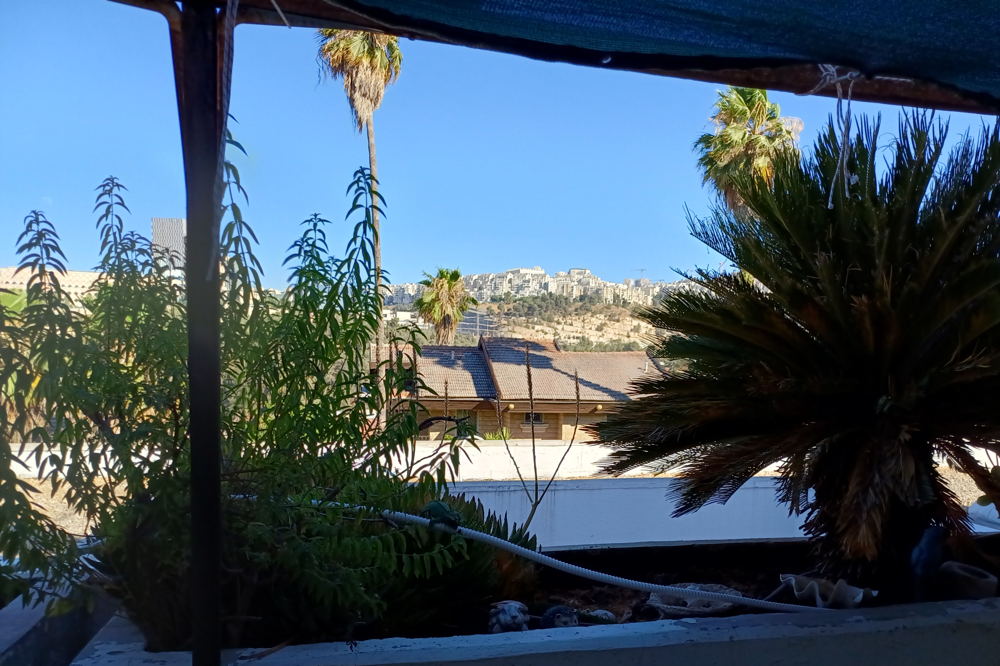

Secure1 photo of the author from 2025
Geolocation: Ramot Bet, Jerusalem 9727433 ISRAEL, 31.808472N, 35.200944E. Call for exact address!
Driving: Long term street parking is available at or near Derech HaHoresh 18, 20, 22, or 24. On the north (i.e. even numbered) side of HaHoresh, walk up the steps between the cottages until the first street.
Wife: Judy DOT Bernstein1 AT gmailbozo@example.com DOT com, +bozo@example.com972.50.751-5111: designer of natural cosmetics
Son: Yirmiyahu + 4: astrophysicist and optics
Daughter: Naomi Sarah + 4: maternity nurse
Daughter: Carmiella + 1: cellist and music teacher
Son: Asher + 4: environmental scientist
Github: TBD
Articles & Blog: TBD

Secure Photo: This secure photo was built using GIMP blurring filters (e.g. Gaussian, clothify, and oilify) along with a prominent distorted visible email address watermark. This digital "camouflage" will defeat almost all face matching algorithms - in spite of the fact that my 3 year old grandson has no problem identifying me from this photo. It protects my privacy in two ways. (1) Harvesting it from the Internet, and adding it to a database of photos that will be digitally compared with CCTV surveillance photos will not work. (2) The photo has built-in two factor authentication (2FA). The prominent email address watermark prevents a web site from maliciously displaying my photo while attempting to associate it with any other person besides me. Similarly if a site were to maliciously display my photo without my permission in order to imply my association with them then it would be trivial for anyone who may be suspicious of their claim to challenge the site by asking me for a verification email. And it would be interesting to consider adding an Eurion currency watermark that would fool Photoshop software along with high quality printers and scanners into believing that the watermarked photo is a banknote in order to prevent it from being manipulated or printed. The general field of obscuring personal information is referred to as de-identification. There is an Israeli company, D-ID, that (formerly?) built a product that was able to obscure high quality images without using any blurring filters which could not be used in automated face verification scanners!↩︎